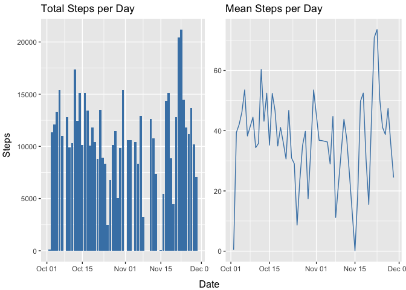
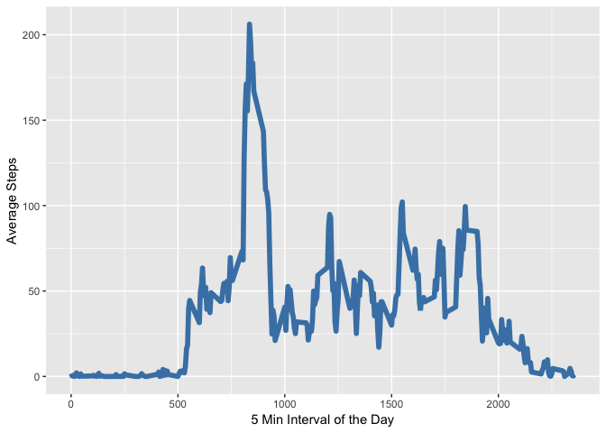
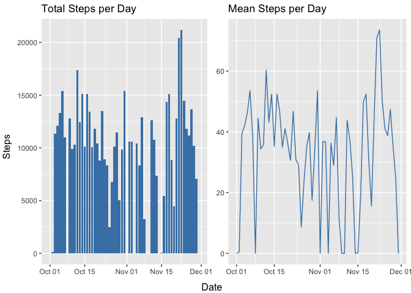
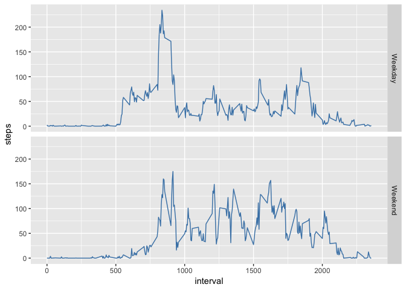

The activity data is provided in a zip file. The preprocess step consists in unziping the file, loading the uncompressed csv file into a dataframe, and then converting the date column into date type.
unzip("activity.zip")
if (file.exists("activity.csv")){
activity_data <- read.csv("activity.csv", header = TRUE)
tmp<-file.remove("activity.csv")
}
activity_data$date<-as.Date(activity_data$date, format="%Y-%m-%d")The process data frame looks like this:
str(activity_data)## 'data.frame': 17568 obs. of 3 variables:
## $ steps : int NA NA NA NA NA NA NA NA NA NA ...
## $ date : Date, format: "2012-10-01" "2012-10-01" ...
## $ interval: int 0 5 10 15 20 25 30 35 40 45 ...The following three plots show the total, mean and median number of steps per day taken.
library(gridExtra)
library(dplyr)
library(ggplot2)
# Just keep the date and step data, remove NAs and group by date.
steps_grouped_by_date <- activity_data %>%
select(date, steps) %>%
filter(!is.na(steps)) %>%
group_by(date)
# Compute the number of total steps per day
steps_data <- steps_grouped_by_date %>%
summarise(count=sum(steps))
# Compute the number of average of steps per day
# and add it to the dataframe
tmp <- steps_grouped_by_date %>%
summarise(mean=mean(steps))
steps_data$mean <- tmp$mean
gg <- ggplot(steps_data, aes(x=date, y=count))
p1 <- gg + geom_bar(stat="identity", fill="steelblue") +
ggtitle("Total Steps per Day") +
theme(axis.title.x = element_blank(),
axis.title.y = element_blank())
p2 <- gg + geom_line(inherit.aes = FALSE, aes(x=date, y=mean),
color="steelblue") +
ggtitle("Mean Steps per Day") +
theme(axis.title.x = element_blank(),
axis.title.y = element_blank())
grid.arrange(p1,p2,nrow=1, left="Steps", bottom="Date")
Looking at more detail the total number of steps:
summary(steps_data$count)## Min. 1st Qu. Median Mean 3rd Qu. Max.
## 41 8841 10765 10766 13294 21194The average daily activity patter can be visualized by looking at the average number of steps taken by time interval of the day.
steps_by_interval <-
activity_data %>%
select(interval, steps) %>%
filter(!is.na(steps)) %>%
group_by(interval) %>%
summarise(mean = mean(steps))
ggplot(steps_by_interval, aes(x = interval, y = mean)) +
geom_line(color = "steelblue", size = 2) +
xlab("5 Min Interval of the Day") +
ylab("Average Steps") One can see in the time series, that there is a clear peak. The time interval and max average steps can be found as follows:
steps_by_interval[which.max(steps_by_interval$mean),]## # A tibble: 1 x 2
## interval mean
## <int> <dbl>
## 1 835 206.The presense of missing values in the dataset may be a cause of bias in the measuments. In this data set, there are many intervals for which we have no step data.
missing_steps<-sum(is.na(activity_data$steps))
missing_steps## [1] 2304To reduce this bias, we will replace the missing value of steps for average steps for that day. In the cases where there is no data for the whole day, we will replace with 0.
filled_data <- activity_data
for (row in 1:nrow(filled_data)) {
if(is.na(filled_data[row, "steps"])) {
mydate<-filled_data[row,"date"]
day_mean<-steps_data[steps_data$date==mydate,]$mean
# handle case in which there is no data for the day.
if(length(day_mean)==0){
filled_data[row,"steps"]<-0
next
}
filled_data[row,"steps"]<-day_mean
}
}Finally, we want to see what the histogram of the filled data looks like.
# Just keep the date and step data, remove NAs and group by date.
steps_grouped_by_date <- filled_data %>%
select(date, steps) %>%
group_by(date)
# Compute the number of total steps per day
filled_data <- steps_grouped_by_date %>%
summarise(count=sum(steps))
# Compute the number of average of steps per day
# and add it to the dataframe
tmp <- steps_grouped_by_date %>%
summarise(mean=mean(steps))
filled_data$mean <- tmp$mean
gg <- ggplot(filled_data, aes(x=date, y=count))
p1 <- gg + geom_bar(stat="identity", fill="steelblue") +
ggtitle("Total Steps per Day") +
theme(axis.title.x = element_blank(),
axis.title.y = element_blank())
p2 <- gg + geom_line(inherit.aes = FALSE, aes(x=date, y=mean),
color="steelblue") +
ggtitle("Mean Steps per Day") +
theme(axis.title.x = element_blank(),
axis.title.y = element_blank())
grid.arrange(p1,p2,nrow=1, left="Steps", bottom="Date") Looking now at the summary for the filled data:
summary(filled_data$count)## Min. 1st Qu. Median Mean 3rd Qu. Max.
## 0 6778 10395 9354 12811 21194First we add a new column to our dataset indicating whether the date is a weekday or a weekend.
activity_data$date_type<-weekdays(activity_data$date)
activity_data$date_type<-sapply(activity_data$date_type, function(x)
if(x=="Saturday" || x=="Sunday") {"Weekend"}
else {"Weekday"}
)
activity_data$date_type<-as.factor(activity_data$date_type)
steps_by_date_type <- activity_data %>%
filter(!is.na(steps)) %>%
select(date_type, interval, steps) %>%
group_by(date_type, interval) %>%
summarize_all(mean)
p <- ggplot(steps_by_date_type, aes(interval, steps)) +
geom_line(color="steelblue")
p + facet_grid(rows=vars(date_type))